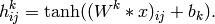
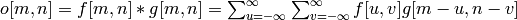
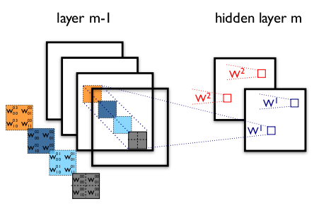

卷积神经网络（Convolutional Neural Networks LeNet）
在这一节假设读者已经阅读了之前的两章使用逻辑回归进行MNIST分类和多层感知机。
如果你想要在GPU上跑样例，你需要一个好的GPU。至少是1GB显存的。当显示器连接在显卡上时，你可能需要更大的显存。
当GPU连接在显示器上时，每次GPU的调用会有几秒钟的限制。这是必须的，因为GPUs不能在计算的时候，同时被用于显示器。如果没有这个限制，屏幕会长时间不动，就像死机一样。这个例子会说中中等质量的GPUs。当GPU不连接显示器时，没有这个时间限制。你可以通过降低batch的大小来出来延时问题。
动机
卷积神经网络是多层感知机的生物灵感变种。从Hubel和Wiesel先前对猫的视觉皮层的研究，我们知道视皮层中含有细胞的复杂分布。这些细胞只对小的视觉子区域敏感，称为感受野。这些子区域平铺来覆盖整个视场。这些细胞表现为输入图像空间的局部滤波器，非常适合检测自然图像中的强空间局部相关性。
此外，两类基础细胞类型被定义：简单细胞使用它们的感受野，最大限度的响应特定的棱状图案。复杂细胞有更大的感受野，可以局部不变的确定图案精确位置。动物视觉皮层是现存的最强大的视觉处理系统，很显然，我们需要去模仿它的行为。因此，许多类神经模型在文献中出现，包括NeoCognitron，HMAX和LeNet-5，这是本教程需要着重讲解的。
稀疏连接
卷积神经网络通过在相邻层的神经元之间实施局部连接模式来检测局部空间相关性。换句话说就是，第m层的隐藏单元的输入来自第m－1层单元的子集，单元拥有空间上的感受野连接。我们可以通过如下的图来表示：

想象一下，第m－1层是输入视网膜。在上图总，第m层的单元有宽度为3的对输入视网膜的感受野，因此它们只连接视网膜层中3个相邻的神经元。第m层的单元与下一层有相似的连接。我们说，感受野连接于下一层的数目也是3，但是感受野连接于输入的则更大（5）。每个单元对视网膜上于自己感受野相异的地方都是不会有响应的。这个结构保证了被学习的滤波器对一个空间局部输入图案有最强的响应。
然而，就像上面展示的，将这些层叠加起来去形成（非线性）滤波器，就可以变得越来越全局化。举例而言，第m＋1层的单元可以编码一个宽度为5的非线性特征。
权值共享
此外，在CNNs中，每一只滤波器共享同一组权值，这样该滤波器就可以形成一个特征映射（feaature map）。梯度下降算法在小改动后可以学习这种共享参数。这个被共享权值的梯度就是被共享的参数的梯度的简单求和。
复制单元使得特征可以无视其在视觉野中的位置而被检测到。此外，权值共享增加了学习效率，减少了需要被学习的自由参数的数目。这样的设定，使得CNNs在视觉问题上有更好的泛化性。
细节和注解
一个特征映射是由一个函数在整个图像的某一子区域重复使用来获得的，换句话说，就是通过线性滤波器来卷积输入图像，加上偏置后，再输入到非线性函数。如果我们定义第k个特征映射是为h_k，滤波器有W_k，b_k定义，则特征映射可以被表现为如下形式：

其中对于2维卷积有如下定义：

为了形成数据更丰富的表达，隐藏层有多层特征映射组成｛h_k,k=0..K｝。一个隐层的权值矩阵W可以用一个4维张量来表示，包含了每个目标特征映射、源目标特征映射、源水平位置，源垂直位置的元素。偏置b则是一个向量，纪录每个目标特征映射的元素。我们可以用如下的图来表示：

上图显示了一个CNN的两层，第m-1层包含4个特征映射，第m层包含2个特征映射（h_0和h_1）。h_0和h_1中红蓝色区域的像素（输出值）由第m-1层中2*2的感受野计算而言（相同颜色区域）。注意，感受野包含了所有的4个输入特征映射。W_0，W_1，h_0，h_1因此都是3维权值张量。第一个维度指定输入特征映射，剩下两个表示参考坐标。
把它们都放一起就是，W_k_l(i,j)，表示第m层的第k个特征映射，在第m-1层的l个特征映射的(i,j)参考坐标的连接权值。
卷积操作
卷积操作是Theano实现卷积层的主要消耗。卷积操作通过theano.tensor.signal.conv2d，它包括两个输入符号：
- 与输入的minibatch有关的4维张量，尺寸包括如下：[mini-batch的大小，输入特征映射的数目，图像高度，图像宽度]。
- 与权值矩阵W相关的4维张量，尺寸包括如下：[m层特征映射的数目，m-1层特征映射的数目，滤波器高度，滤波器宽度]。
下面的Theano代码实现了类似图1的卷积层。输入包括大小为120160的3个特征映射（1一个RGB彩图）。我们使用2个大小为99感受野的卷积滤波器。
from theano.tensor.nnet import conv
rng = numpy.random.RandomState(23455)
# instantiate 4D tensor for input
input = T.tensor4(name='input')
# initialize shared variable for weights.
w_shp = (2, 3, 9, 9)
w_bound = numpy.sqrt(3 * 9 * 9)
W = theano.shared( numpy.asarray(
rng.uniform(
low=-1.0 / w_bound,
high=1.0 / w_bound,
size=w_shp),
dtype=input.dtype), name ='W')
# initialize shared variable for bias (1D tensor) with random values
# IMPORTANT: biases are usually initialized to zero. However in this
# particular application, we simply apply the convolutional layer to
# an image without learning the parameters. We therefore initialize
# them to random values to "simulate" learning.
b_shp = (2,)
b = theano.shared(numpy.asarray(
rng.uniform(low=-.5, high=.5, size=b_shp),
dtype=input.dtype), name ='b')
# build symbolic expression that computes the convolution of input with filters in w
conv_out = conv.conv2d(input, W)
# build symbolic expression to add bias and apply activation function, i.e. produce neural net layer output
# A few words on ``dimshuffle`` :
# ``dimshuffle`` is a powerful tool in reshaping a tensor;
# what it allows you to do is to shuffle dimension around
# but also to insert new ones along which the tensor will be
# broadcastable;
# dimshuffle('x', 2, 'x', 0, 1)
# This will work on 3d tensors with no broadcastable
# dimensions. The first dimension will be broadcastable,
# then we will have the third dimension of the input tensor as
# the second of the resulting tensor, etc. If the tensor has
# shape (20, 30, 40), the resulting tensor will have dimensions
# (1, 40, 1, 20, 30). (AxBxC tensor is mapped to 1xCx1xAxB tensor)
# More examples:
# dimshuffle('x') -> make a 0d (scalar) into a 1d vector
# dimshuffle(0, 1) -> identity
# dimshuffle(1, 0) -> inverts the first and second dimensions
# dimshuffle('x', 0) -> make a row out of a 1d vector (N to 1xN)
# dimshuffle(0, 'x') -> make a column out of a 1d vector (N to Nx1)
# dimshuffle(2, 0, 1) -> AxBxC to CxAxB
# dimshuffle(0, 'x', 1) -> AxB to Ax1xB
# dimshuffle(1, 'x', 0) -> AxB to Bx1xA
output = T.nnet.sigmoid(conv_out + b.dimshuffle('x', 0, 'x', 'x'))
# create theano function to compute filtered images
f = theano.function([input], output)
让我们让它变得有趣点...
import numpy
import pylab
from PIL import Image
# open random image of dimensions 639x516
img = Image.open(open('/images/3wolfmoon.jpg'))
img = numpy.asarray(img, dtype='float64') / 256.
# put image in 4D tensor of shape (1, 3, height, width)
img_ = img.swapaxes(0, 2).swapaxes(1, 2).reshape(1, 3, 639, 516)
filtered_img = f(img_)
# plot original image and first and second components of output
pylab.subplot(1, 3, 1); pylab.axis('off'); pylab.imshow(img)
pylab.gray();
# recall that the convOp output (filtered image) is actually a "minibatch",
# of size 1 here, so we take index 0 in the first dimension:
pylab.subplot(1, 3, 2); pylab.axis('off'); pylab.imshow(filtered_img[0, 0, :, :])
pylab.subplot(1, 3, 3); pylab.axis('off'); pylab.imshow(filtered_img[0, 1, :, :])
pylab.show()
将产生这样的输出：

注意，一个随机的初始化滤波器表现得很像一个特征检测器。
注意我们使用了与MLP相同得权值初始化方案。权值在一个范围为[-1/fan-in, 1/fan-in]的均匀分布中随机取样，fan-in是一个隐单元的输入数。对MLP，它是下一层单元的数目。对CNNs，我不得不需要去考虑到输入特征映射的数目和感受野的大小。
最大池化
卷积神经网络另一个重大的概念是最大池化，一个非线性的降采样形式。最大池化就是将输入图像分割为一系列不重叠的矩阵，然后对每个子区域，输出最大值。
最大池化在视觉中是有用的，由如下2个原因：
- 通过消除非最大值，减少了更上层的计算量
- 提供了一种平移不变性。想象一下，一个最大池化层级联在一个卷积层。这里有8个方向，一个输入图像可以通过单个像素平移。假如说最大池化是22的区域，8个可能的方向中有3个可能会产生相同的输出（3/8）。当池化层为33时，概率增加到5/8。
最大池化在Theano中通过theano.tensor.signal.downsample.max_pool_2d。这个函数被设计为可以接受N维的张量和一个缩减因子，然后对张量的最后2维执行最大池化。
from theano.tensor.signal import downsample
input = T.dtensor4('input')
maxpool_shape = (2, 2)
pool_out = downsample.max_pool_2d(input, maxpool_shape, ignore_border=True)
f = theano.function([input],pool_out)
invals = numpy.random.RandomState(1).rand(3, 2, 5, 5)
print 'With ignore_border set to True:'
print 'invals[0, 0, :, :] =\n', invals[0, 0, :, :]
print 'output[0, 0, :, :] =\n', f(invals)[0, 0, :, :]
pool_out = downsample.max_pool_2d(input, maxpool_shape, ignore_border=False)
f = theano.function([input],pool_out)
print 'With ignore_border set to False:'
print 'invals[1, 0, :, :] =\n ', invals[1, 0, :, :]
print 'output[1, 0, :, :] =\n ', f(invals)[1, 0, :, :]
将会产生下面的输出：
With ignore_border set to True:
invals[0, 0, :, :] =
[[ 4.17022005e-01 7.20324493e-01 1.14374817e-04 3.02332573e-01 1.46755891e-01]
[ 9.23385948e-02 1.86260211e-01 3.45560727e-01 3.96767474e-01 5.38816734e-01]
[ 4.19194514e-01 6.85219500e-01 2.04452250e-01 8.78117436e-01 2.73875932e-02]
[ 6.70467510e-01 4.17304802e-01 5.58689828e-01 1.40386939e-01 1.98101489e-01]
[ 8.00744569e-01 9.68261576e-01 3.13424178e-01 6.92322616e-01 8.76389152e-01]]
output[0, 0, :, :] =
[[ 0.72032449 0.39676747]
[ 0.6852195 0.87811744]]
With ignore_border set to False:
invals[1, 0, :, :] =
[[ 0.01936696 0.67883553 0.21162812 0.26554666 0.49157316]
[ 0.05336255 0.57411761 0.14672857 0.58930554 0.69975836]
[ 0.10233443 0.41405599 0.69440016 0.41417927 0.04995346]
[ 0.53589641 0.66379465 0.51488911 0.94459476 0.58655504]
[ 0.90340192 0.1374747 0.13927635 0.80739129 0.39767684]]
output[1, 0, :, :] =
[[ 0.67883553 0.58930554 0.69975836]
[ 0.66379465 0.94459476 0.58655504]
[ 0.90340192 0.80739129 0.39767684]]
注意，与其他Theano代码相比，max_pool_2d操作有点特殊。它需要缩减因子ds(长度维2的tuple，班汉图像长度和宽度的缩减因子)在图构建的时候被告知。这在未来可能会发生改变。
整个模型
稀疏性、卷积层和最大池化时LeNet系列模型的核心。而准确的模型细节有很大的差异，下图显示了一个LeNet模型。

模型比较低的层是由卷积和最大池化层的交替来构建的，较高的层则是全连接的传统MLP（隐藏层＋逻辑回归）。第一个全连接层的输入是前一层(the layer below)的特征映射的集合。
从上图的实现来看，较低层的操作都是建立在4维张量上的。然后它需要被压缩为2维的特征映射，来适应之后的MLP实现。
将它组合起来
现在我们已经知道了在Theano中实现LeNet的所有方法。那我们先实现一个LeNetConvPoolLayer类，它是{卷积＋最大池化}层。
class LeNetConvPoolLayer(object):
"""Pool Layer of a convolutional network """
def __init__(self, rng, input, filter_shape, image_shape, poolsize=(2, 2)):
"""
Allocate a LeNetConvPoolLayer with shared variable internal parameters.
:type rng: numpy.random.RandomState
:param rng: a random number generator used to initialize weights
:type input: theano.tensor.dtensor4
:param input: symbolic image tensor, of shape image_shape
:type filter_shape: tuple or list of length 4
:param filter_shape: (number of filters, num input feature maps,
filter height, filter width)
:type image_shape: tuple or list of length 4
:param image_shape: (batch size, num input feature maps,
image height, image width)
:type poolsize: tuple or list of length 2
:param poolsize: the downsampling (pooling) factor (#rows, #cols)
"""
assert image_shape[1] == filter_shape[1]
self.input = input
# there are "num input feature maps * filter height * filter width"
# inputs to each hidden unit
fan_in = numpy.prod(filter_shape[1:])
# each unit in the lower layer receives a gradient from:
# "num output feature maps * filter height * filter width" /
# pooling size
fan_out = (filter_shape[0] * numpy.prod(filter_shape[2:]) /
numpy.prod(poolsize))
# initialize weights with random weights
W_bound = numpy.sqrt(6. / (fan_in + fan_out))
self.W = theano.shared(
numpy.asarray(
rng.uniform(low=-W_bound, high=W_bound, size=filter_shape),
dtype=theano.config.floatX
),
borrow=True
)
# the bias is a 1D tensor -- one bias per output feature map
b_values = numpy.zeros((filter_shape[0],), dtype=theano.config.floatX)
self.b = theano.shared(value=b_values, borrow=True)
# convolve input feature maps with filters
conv_out = conv.conv2d(
input=input,
filters=self.W,
filter_shape=filter_shape,
image_shape=image_shape
)
# downsample each feature map individually, using maxpooling
pooled_out = downsample.max_pool_2d(
input=conv_out,
ds=poolsize,
ignore_border=True
)
# add the bias term. Since the bias is a vector (1D array), we first
# reshape it to a tensor of shape (1, n_filters, 1, 1). Each bias will
# thus be broadcasted across mini-batches and feature map
# width & height
self.output = T.tanh(pooled_out + self.b.dimshuffle('x', 0, 'x', 'x'))
# store parameters of this layer
self.params = [self.W, self.b]
注意，当初始化权重值的时候，fan-in是由感受野和输入特征映射数决定的。
最后，我们通过使用在使用逻辑回归进行MNIST分类中定义的LogisticRegression类，和多层感知机中的HiddenLayer类来实例化我们的网络：
x = T.matrix('x') # the data is presented as rasterized images
y = T.ivector('y') # the labels are presented as 1D vector of
# [int] labels
######################
# BUILD ACTUAL MODEL #
######################
print '... building the model'
# Reshape matrix of rasterized images of shape (batch_size, 28 * 28)
# to a 4D tensor, compatible with our LeNetConvPoolLayer
# (28, 28) is the size of MNIST images.
layer0_input = x.reshape((batch_size, 1, 28, 28))
# Construct the first convolutional pooling layer:
# filtering reduces the image size to (28-5+1 , 28-5+1) = (24, 24)
# maxpooling reduces this further to (24/2, 24/2) = (12, 12)
# 4D output tensor is thus of shape (batch_size, nkerns[0], 12, 12)
layer0 = LeNetConvPoolLayer(
rng,
input=layer0_input,
image_shape=(batch_size, 1, 28, 28),
filter_shape=(nkerns[0], 1, 5, 5),
poolsize=(2, 2)
)
# Construct the second convolutional pooling layer
# filtering reduces the image size to (12-5+1, 12-5+1) = (8, 8)
# maxpooling reduces this further to (8/2, 8/2) = (4, 4)
# 4D output tensor is thus of shape (nkerns[0], nkerns[1], 4, 4)
layer1 = LeNetConvPoolLayer(
rng,
input=layer0.output,
image_shape=(batch_size, nkerns[0], 12, 12),
filter_shape=(nkerns[1], nkerns[0], 5, 5),
poolsize=(2, 2)
)
# the HiddenLayer being fully-connected, it operates on 2D matrices of
# shape (batch_size, num_pixels) (i.e matrix of rasterized images).
# This will generate a matrix of shape (batch_size, nkerns[1] * 4 * 4),
# or (500, 50 * 4 * 4) = (500, 800) with the default values.
layer2_input = layer1.output.flatten(2)
# construct a fully-connected sigmoidal layer
layer2 = HiddenLayer(
rng,
input=layer2_input,
n_in=nkerns[1] * 4 * 4,
n_out=500,
activation=T.tanh
)
# classify the values of the fully-connected sigmoidal layer
layer3 = LogisticRegression(input=layer2.output, n_in=500, n_out=10)
# the cost we minimize during training is the NLL of the model
cost = layer3.negative_log_likelihood(y)
# create a function to compute the mistakes that are made by the model
test_model = theano.function(
[index],
layer3.errors(y),
givens={
x: test_set_x[index * batch_size: (index + 1) * batch_size],
y: test_set_y[index * batch_size: (index + 1) * batch_size]
}
)
validate_model = theano.function(
[index],
layer3.errors(y),
givens={
x: valid_set_x[index * batch_size: (index + 1) * batch_size],
y: valid_set_y[index * batch_size: (index + 1) * batch_size]
}
)
# create a list of all model parameters to be fit by gradient descent
params = layer3.params + layer2.params + layer1.params + layer0.params
# create a list of gradients for all model parameters
grads = T.grad(cost, params)
# train_model is a function that updates the model parameters by
# SGD Since this model has many parameters, it would be tedious to
# manually create an update rule for each model parameter. We thus
# create the updates list by automatically looping over all
# (params[i], grads[i]) pairs.
updates = [
(param_i, param_i - learning_rate * grad_i)
for param_i, grad_i in zip(params, grads)
]
train_model = theano.function(
[index],
cost,
updates=updates,
givens={
x: train_set_x[index * batch_size: (index + 1) * batch_size],
y: train_set_y[index * batch_size: (index + 1) * batch_size]
}
)
我们把进行实际训练和early-stopping代码取出了。因为它和MLP中是一样的。有兴趣的读者，可以阅读教程开头的源代码。
运行代码
在一台Core i7-2600K CPU clocked at 3.40GHz上，我们使用floatX=float32，获得如下的输出：
Optimization complete.
Best validation score of 0.910000 % obtained at iteration 17800,with test
performance 0.920000 %
The code for file convolutional_mlp.py ran for 380.28m
在GeForce GTX 285上，我们获得了如下：
Optimization complete.
Best validation score of 0.910000 % obtained at iteration 15500,with test
performance 0.930000 %
The code for file convolutional_mlp.py ran for 46.76m
在GeForce GTX 480上，获得如下：
Optimization complete.
Best validation score of 0.910000 % obtained at iteration 16400,with test
performance 0.930000 %
The code for file convolutional_mlp.py ran for 32.52m
可以观察到不同实验下验证误差和测试误差的不同，这是由不同硬件的取整结构不同造成的。可以忽略。
技巧
超参的选择
卷积神经网络的训练相比与标准的MLP是相当困难的，因为它添加了更多的超参数。当我们在应用学习率和正则化的规则下，下面的方法也需要在优化CNNs被考虑：
滤波器的数量
当选择每层滤波器数量的时候，需要记住计算单卷积层的活性比传统的MLP会更加昂贵。
假设第l-1层包含K(l-1)个特征映射和M*N个像素点（例如，位置数乘以特征映射数），然后第l层有K(l)个滤波器，尺寸为mn。那么计算一个特征映射（在(M-m)(N-n)个像素位置应用每个mn大小的滤波器）将消耗(M-m)(N-n)mn*K_(l-1)的计算量。然后总共要计算K_l次。如果不是所有的特征只与前一层的所有特征相连，那么事情就变得更加复杂啦。
对标准MLP而言，第l层如果有Kl个神经元，那计算量只有K(k-1)*K_l。因此，CNNs中滤波器的数量通常比MLPs中隐单元的数量小很多，通常是基于特征映射的尺寸（输入图像的尺寸和滤波器的形状）。
因为特征映射的尺寸会随着深度的增加而减小，靠近输入层的层将趋向于有更少的滤波器，而更高的层有更多的滤波器。事实上，为了平衡每一层的计算量，特征数和图像位置数的乘积在层的传递过程中都是基本一致的。为了保护输入信息，我们需要保证总的激活数量（特征映射数*像素位置数）在层间传递的时候是至于减少（当然我们在做监督学习的时候当然是希望它减小的）。特征映射的数量直接控制整个容量，同时它依赖于可用样例的数目和任务的复杂度。
滤波器的尺寸
通常在每个文献中滤波器的尺寸都有很大的不同，它常常是基于数据库的。MNIST在第一层的最好结果是55层滤波器。当自然图像（每维有几百个像素）趋向于使用更大的滤波器，例如1212，15*15。
因此这个技巧事实上是去寻找正确等级的“粒度”，以便对给定的数据集去形成合适范围内的抽象。
最大池化的尺寸
经典的是22，或者没有最大池化。非常大的图可以在较低的层使用44的池化。但是需要记住的是，池化在通过16个因子减少信号维度的同时，也可能导致信号细节的大量丢失。
技巧
假如你想要在新的数据集上采用这个模型，下面的一些小技巧可能能让你获得更好的结果：
- 白化(whitening)数据（例如，使用主成分分析）
- 衰减每次迭代的学习速率。